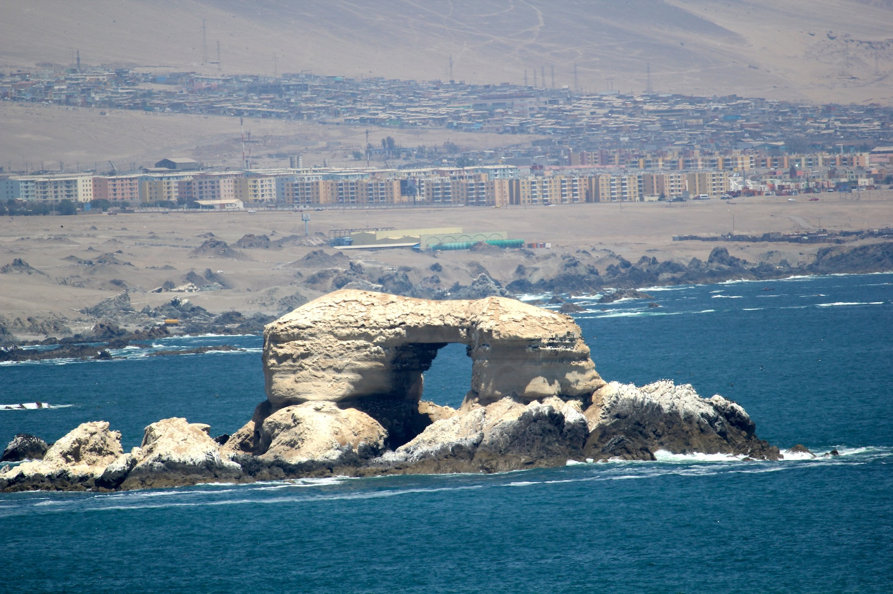

Antofagasta, apodada como La Perla del Norte, es una ciudad, puerto y comuna del norte de Chile, capital de la provincia y de la región homónima. Según el censo de 2017, realizado por el INE, es la quinta ciudad más poblada del país y la comuna más poblada fuera de la Región Metropolitana con 361 873 habitantes.Las principales actividades industriales de Antofagasta se encuentran íntimamente ligadas a la minería. En las últimas décadas, desde los años 70, ha presentado un sostenido crecimiento en las áreas relativas a la construcción, comercio y hotelería, además de un notable desarrollo urbano.
Existe una serie de teorías para explicar el origen del topónimo Antofagasta y no se ha logrado llegar a un consenso respecto a este. Probablemente sea una palabra compuesta que proviene del cacán meridional anto (o hattun, que significa 'grande'), faya (o haya 'salar') y gasta ('pueblo'), y vendría a significar Pueblo del Salar Grande. Podría ser asimismo una palabra compuesta proveniente del quechua anta (cobre) y pakay (esconder): 'Escondrijo de Cobre'. Otra teoría la relaciona con Antofagasti ('Puerta del Sol'), nombre que los changos daban al actual Monumento Natural La Portada.[cita requerida] Se dice que el nombre Antofagasta se debe a una decisión del presidente boliviano Mariano Melgarejo, quien, cerca del año 1870, renombró la ciudad en honor a una estancia que poseía en Antofagasta de la Sierra.
Seminario Gráfica Computacional I 2018, Primer Semestre → Clase 1 → Viernes 16 de marzo